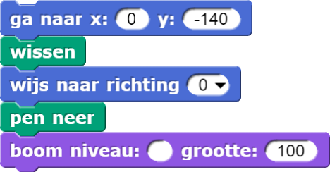
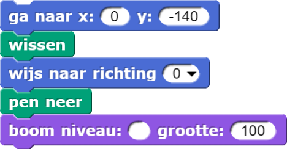

Test jezelf: Boominvoer
Alle vragen verwijzen naar de versie van het boomblok hieronder en het rechter script dat het
boomblok aanroept.
Merk op dat in het rechterblok het invoervak (rood omcirkeld) voor het boom
niveau nog leeg is.
In het boomscript hebben we de draaihoeken en de vermenigvuldigingsfactoren voor de
schaalgrootte aangepast. Hierdoor zijn de linker en rechter takken hetzelfde, zodat de plaatjes van de bomen
makkelijker te begrijpen zijn.
 


Als dit plaatje getekend wordt, welk getal moet dan in het invoer vakje voor het niveau staan?
Met andere woorden, wat moet er in het lege vakje hierboven staan om deze afbeelding te maken?
Wat zou er gebeuren als je de invoer voor grootte veranderde naar -100?
neem stappenblok?
neem stappenblok zorgt dat de sprite
naar achteren beweegt.
Wat gebeurt er als je de invoer voor niveau verandert in -4?
niveau = 1. En zal de linkertak zichzelf aanroepen.
neem stappenblok?